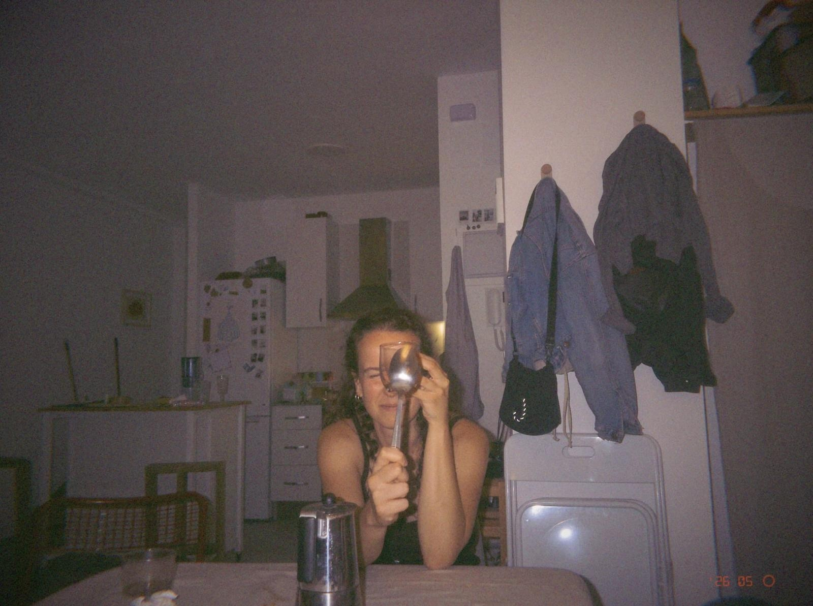

Aida Villalba Ortiz
PhD Student in Statistics and Optimization
Researching accessibility, spatial statistics and sustainable cities through quantitative methods, GIS and network science.
Experience
Professional Experience
-
 2025 – Present
2025 – PresentUniversitat Politècnica de València
Temporary University Lecturer
Statistics Teacher in the Higher Technical School of Industrial Engineering.
View my courses → -
2024 – 2026
Universitat Politècnica de València
Senior Research Technician
Researcher in Spatial Statistics and developing the Nearcity project.
-
 2023 – 2024
2023 – 2024Swisstraffic AG
Spatial Data Analyst
Development of the pipeline for image processing and spatial flows analysis.
Education
-
2026 – 2030
Universitat Politècnica de València
PhD in Statistics and Optimization
Thesis: [thesis title].
-
 2022 – 2023
2022 – 2023Universidad Complutense de Madrid
MSc in Smart and Sustainable Cities
Thesis: [thesis title].
-
2018 – 2022
Universitat Politècnica de València
BSc in Data Science
Thesis: Valencia in 15 minutes: geospatial modelling of the city.
Research
-

Analyzing patterns of accessibility to schools: A gravitational metrics study in València
AIMS Mathematics·2025
-

Projects
Platforms and tools built around spatial accessibility research.

Nearcity Platform
Nearcity is a spatial accessibility platform developed to analyse sustainable mobility, public services and urban accessibility using GIS, network science and spatial statistics.
![[Project name]](assets/projects/[project-2].png)
[Project Name]
[Short project description. Explain the problem it solves, the methods or tech used, and who it's for.]
Teaching
Courses taught at the Universitat Politècnica de València.
Contact
Feel free to reach out for collaborations or questions.
aivilor@upv.es